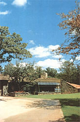
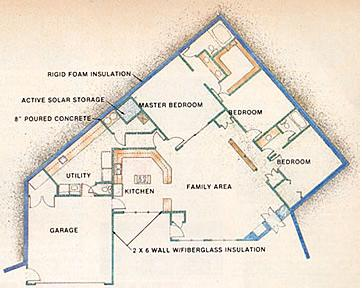
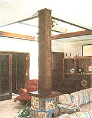
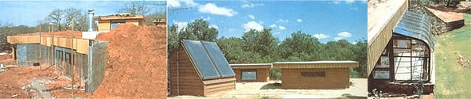

Earth sheltering and passive/active solar design team up for energy effeciency in Oklahoma.
Joe Hylton is one of a growing number of architects who are making their services more affordable by offering standardized plans. Hylton, a graduate of the renowned University of Oklahoma School of Architecture, has been designing energy-efficient buildings since the mid-1970's and now offers a choice of 145 standardized plans for subterranean and active or passive solar homes.
One of the more attractive and efficient of Joe's designs is Solarc 98, a passive solar, subterranean house with allowance for an active solar setup. The 2,132-square-foot home (with another 441 square feet in the garage) has three bedrooms and a large central family area . . . as well as a generous utility room basked against the subterranean 8-inch concrete northwest wall. Passive gain is through more than 100 square feet of glass on the south wall and a clerestory in the light well centered over the main living area. The light well has operable windows so that a ventilation path can be established between this high point and operable panes low in the south wall. Active collectors can also be fitted to the larger clerestory shown to the west of the light well. All exposed walls are framed with 2 X 6's and have fiberglass batt insulation; both the bermed walls and the ceiling, which is covered with 18 inches of earth, are thermally protected by 2 inches of rigid foam.
The home shown in the photos was built by Dorothy and Ray Plummer and incorporates several custom changes from the standard Solarc 98 plan. First, and most obvious, the Plummets added an 18-foot-long greenhouse to the south wall of the living room. With over 200 square feet of glazing, this addition can contribute better than 200,000 Btu per day to space heating. Thermal mass for storage - from the 8-inch poured walls and 4-inch slab - amounts to over 100 tons. What's more, the central heating and cooling system is a water-source heat pump that circulates propylene glycol in a 900-foot-long closed loop of 2-inch polyethylene pipe buried five to six feet beneath the earth on the south side of the house.
Solarc 98 was designed in 1980 and first occupied in May of 1983. During the 12-month period from August 1983 through July 1984, the Plummets' electrical usage was 17,554 kwh, including the power used to pump water from a well. Their average monthly power bill amounts to 1,463 kwh . . . or $81.34. These figures were produced during a year in which there were 12% more heating degree-days than usual, and the heat pump was out of action for the entire month of December, forcing the family to rely on inefficient electric heat!
Hylton offers his services in three different ways. First, standard plan sets are $190 for one copy, $230 for four. Or a customer can engage the architect to modify a set of standard plans for 50 cents per square foot. This includes 10 sets of drawings and specifications. The third option is a complete custom design at 90 cents per square foot for buildings up to 3,000 square feet. You can get a copy of Joe Hylton's Earth Sheltered and Solar Homes: A Book of Plans by sending $14.95, plus $2.50 postage and handling, to Joe Hylton & Associates, 313 E. Boyd St., Norman, OK 73069.
|
The large central family area of the house is kept bright by a light well that also serves as an upper opening for a convective ventilation path. |
 (LEFT) The insulation was visible before the front of the house was sheathed and the green house attached. (CENTER)You can see the top of the light well on the right . . . active solar collectors are visible on the left. |
 |
|
 |
 |
|